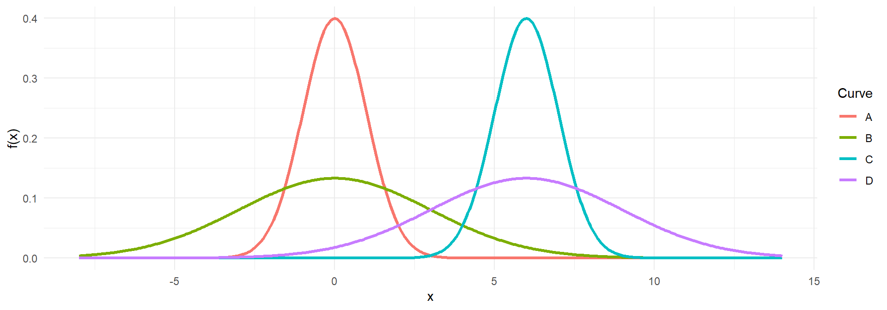
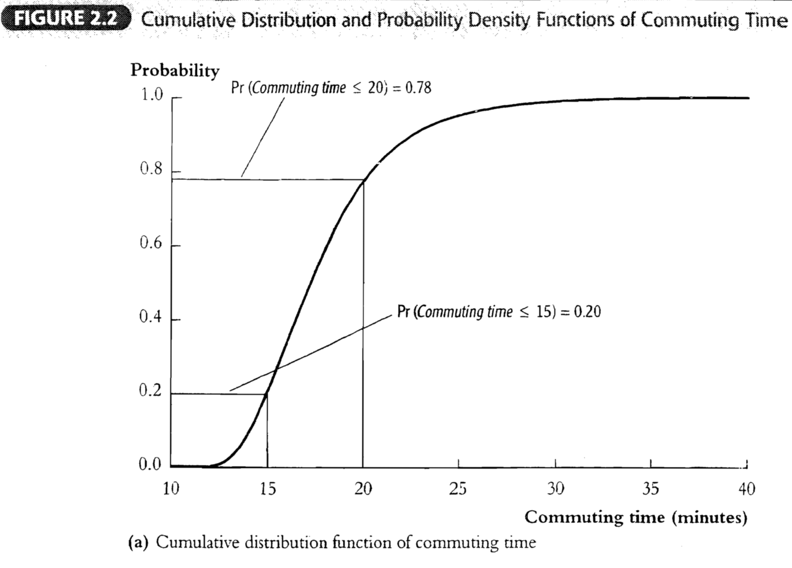
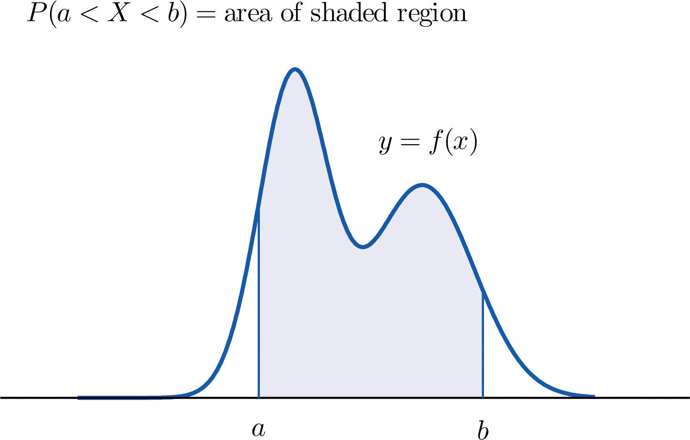
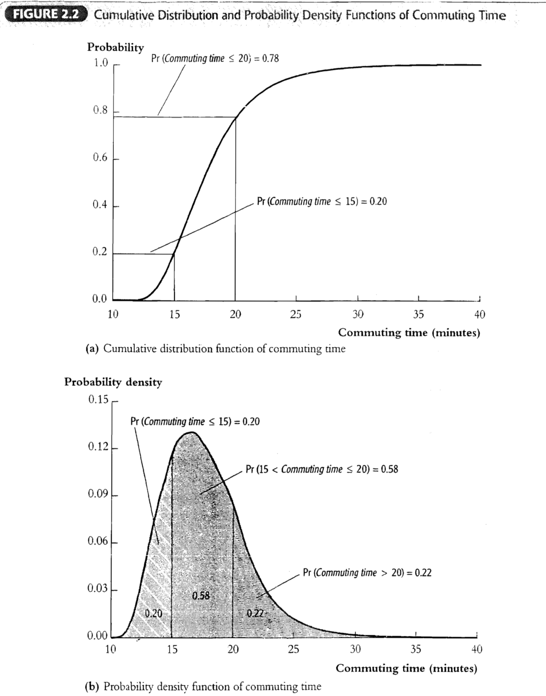
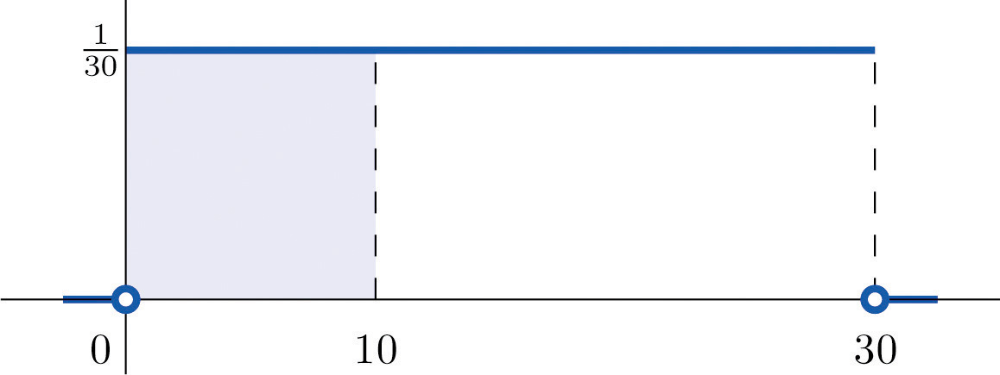
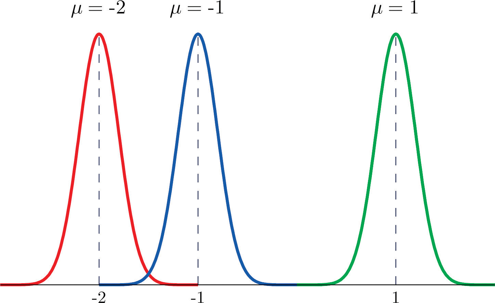
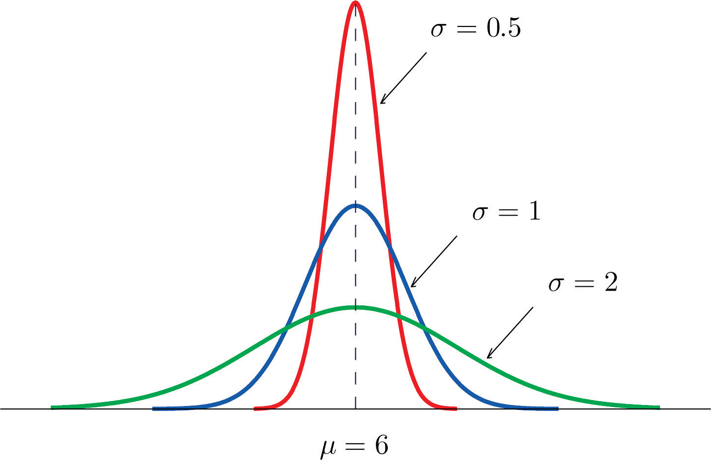

ECON 2B03, Winter 2026
Part B | Lecture 5
Chris Muris, McMaster University
Commuting time CDF


Commuting time: PDF and CDF

Bus arrivals: waiting time and probability

Online order delivery time
Bell curves with different means

Bell curves with different standard deviations

Daily stock returns on the S&P/TSX Composite
Exercise: continuous or discrete?
Classify each of the following random variables as continuous or discrete.
Exercise: bus arrivals (uniform)
A bus arrives every 30 minutes. Let \(X\) be your waiting time in minutes, and assume \(X\) is uniformly distributed on \([0,30]\).
Exercise: CDF to probability
Let \(X\) have CDF \[ F(x) = \begin{cases} 0 & x < 0 \\ x/4 & 0 \le x \le 4 \\ 1 & x > 4 \end{cases} \]
Exercise: delivery time mean and variance
An online retailer promises delivery between 2 and 6 hours after ordering. Suppose the delivery time \(X\) (in hours) is uniformly distributed on \([2,6]\).
Exercise: mineral rights auction
A provincial government auctions mineral exploration rights. Historical data shows winning bids (in thousands of dollars) are uniformly distributed on \([50, 150]\).
Exercise: match the bell curve
The plot below shows four normal density curves labeled A, B, C, and D.

Match each curve to its distribution: \(N(0, 1)\), \(N(0, 9)\), \(N(6, 1)\), \(N(6, 9)\).
Hint: the mean \(\mu\) determines the center; the variance \(\sigma^2\) determines the spread.
These slides started from J. S. Racine’s slides for ECON2B03 at McMaster University.
Readings are from
References
These slides are modified from Jeffrey S. Racine’s slides for ECON2B03 at McMaster University.